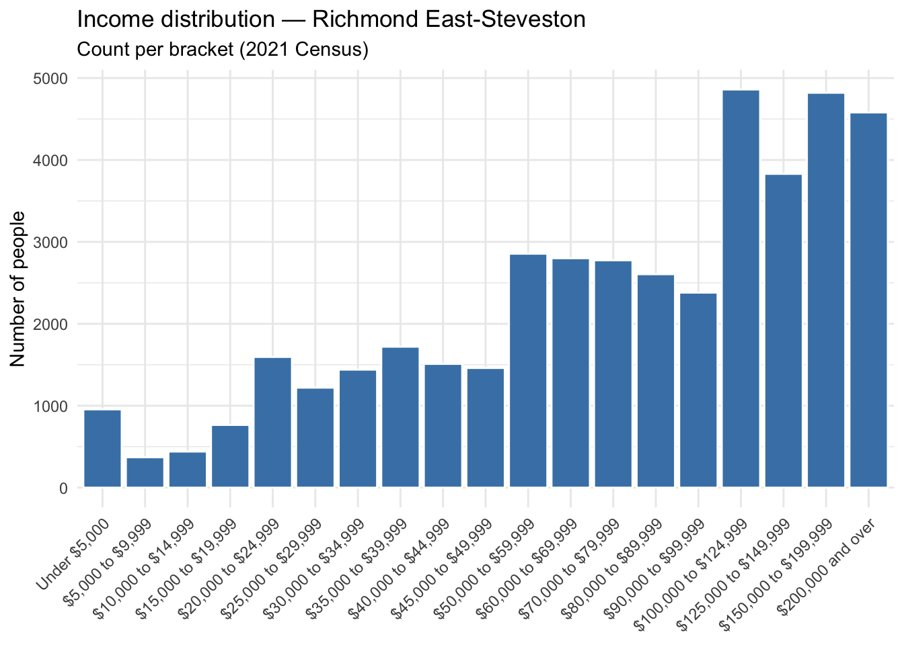
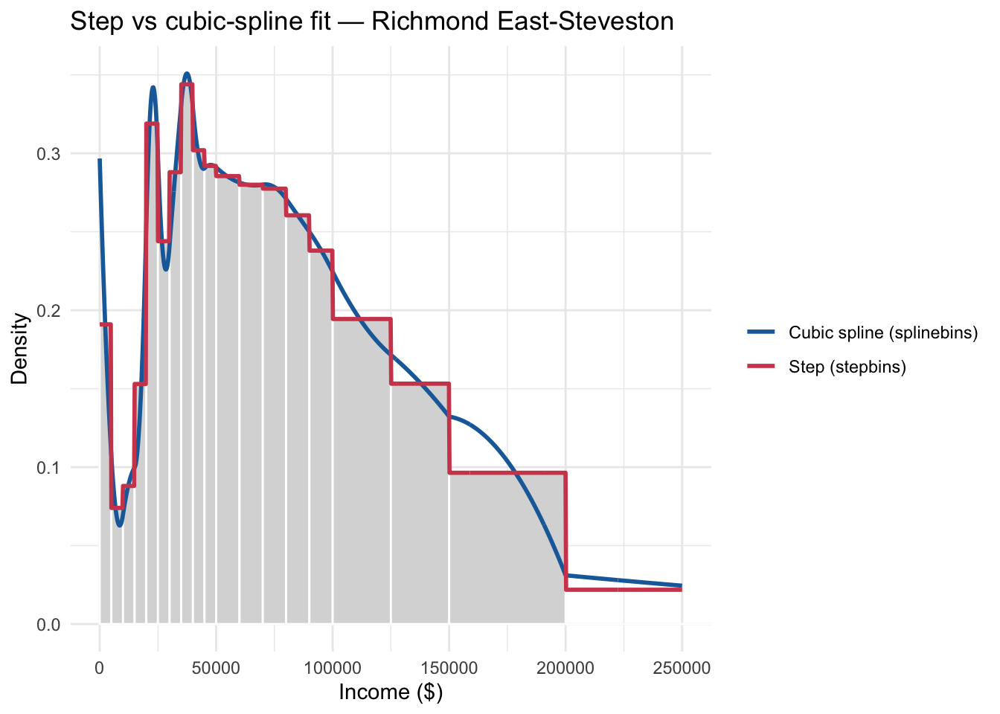
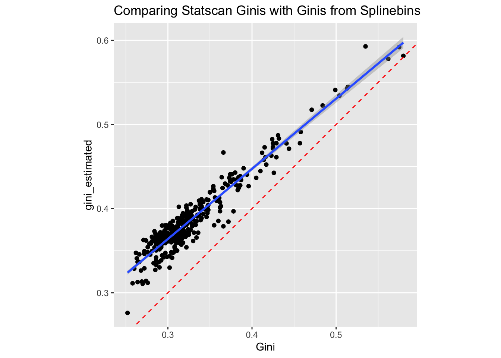

![]()
library(dplyr)
library(here)
library(stringr)
con<-"https://github.com/sjkiss/cesdata2/raw/refs/heads/master/data-raw/statscan/2022_federal_representation_order/2022_federal_representation_order_statistics_canada_profiles.rdata"
# 2. Create a temporary file path
temp_file <- tempfile(fileext = ".RData")
# 3. Download the binary file safely using write-binary mode ("wb")
download.file(con, destfile = temp_file, mode = "wb")
# 4. Load the data into your environment
load(temp_file)
census2021 %>%
#filter in only rows that contain statistical information for FEDS, not provinces and Canada
filter(str_detect(GEO_LEVEL, "Federal")) ->census2021Introduction
I am currently working on a research project on role that voters’ subjective sense of social class plays in political behaviour. This question was last visited in Canadian political science in the 1980s (Lambert et al. 1987), although it has been revisited by sociologist Michelle Maroto (Maroto, Brown, and Durou 2023).
A central statistic in the research on income inequality is the Gini coefficient, which runs from 0 to 1.In a country with a Gini coefficient of 1, one person would have all the income in the country, while in a country with a Gini coefficient of 0, everyone would have the same income.
In the context of subjective social class, one of the things that might make a difference to how people see themselves is what their environment looks like. Andersen and Curtis (2012) found that when income inequality is high, subjective social class positions polarize.
We wanted to test whether or not there were similar effects at a more local level. Given that Canadian elections formally - and substantially - take place at the level of the federal electoral district, it might be reasonable to hypothesize that these effects might manifest themselves there. The problem is getting the Gini coefficient estimates for those districts.
Currently, Statistics Canada publishes Gini coefficients at some levels of geography and for some time periods, but not very far back. Table 11-10-0134-01(Statistics Canada 2022a) reports national Gini coefficients back to 1976. Table 98-10-0096-01 (Statistics Canada 2022b) publishes similar statistics at lower levels of geography, but not at the level of the federal electoral district. Helpfully, however, the most recent data products produced for the 2021 census include Gini coefficients for household income produced at different levels of geography, including Census Metropolitan Areas, Dissemination Areas and, helpfully, Federal Electoral Districts. Normally, the Gini coefficient is estimated with individual-level income data, where each respondent provides their income. It’s not entirely clear from Statistics Canada’s Dictionary of the Census that this is the case, but it seems to be (Statistics Canada 2023, see Appendix 2.3). The report indicates that the coefficient is calculated using the adjusted household income, meaning that they modify the total household income to account for the number of people in the household. A single person earning $100,000 is wealthier than a family of four earning the same income in the household. These then are presumably averaged over a geographical area in order to derive a measure of income inequality in some geography.
However, historical Gini coefficients at these levels of geography are lacking and have to be computed by end-users themselves. And here is a trick: getting historical individual-level income data in order to aggregate that to custom levels of geography (like federal electoral districts) will be very challenging. However, Statistics Canada does publish binned or aggregated income data mapped to smaller levels of geography in the past. For a particular level of geography, this is something along the lines of:
| Income | Count |
|---|---|
| $0-$4,999 | 5,667 |
| $5,000-$9,999 | 10,225 |
| $10,000-$14,999 | 15,222 |
| etc. | etc |
In fact, they have a nice PDF of the statistical census profiles of all 282 federal electoral districts from the 1976 representation order which covers precisely the one historical election (1984) that I am interested in (Statistics Canada 1983).
I’ll talk about how I extracted those statistiscs for each Federal Electoral District in another post, but Claude was able to accomplish it quite well, in a short period of time.
So, at the end of it, we could get the binned income data for 1984 for each Federal Electoral District, but, we would need to calculate the Gini coefficient for each district not from individual level data, but from aggreagated data. Is this possible?
It seems like the short answer is, yes.
Enter some work documented in (Von Hippel, Hunter, and Drown 2017) and implemented in the binsmooth package in R by (Hunter and Drown 2020).
Calculating Gini Coefficients From Binned Income Data
There are multiple ways to deal with data of this type. One way is simply to assign each respondent in the dataset’s count to the midbpoint of the bracket. While this is simple it suffers from two defects: it treats income as discrete (meaning people can only have values like $22,499 or $49,999) when it is continuous (e.g. $22,499, $22,500, $22,501) and it fails to deal with the problem of the open-ended right bracket, (e.g. greater than $249,999). This requires the analyst to arbitrarily select a midpoint for the bracket. But because income is highly skewed (Pareto-distributed is the technical term) and can very substantially with inequality, this can be consequential. Another strategy is to fit bin counts to a continuous parametric distribution such as the Pareto or the Weibull distribution. This can be computationally intensive to try to find which distribution fits the best. An alternative, proposed by von Hippel et al. (2017) is to fit a non-parametric continuous density curve to the empirically observed distribution of data points in the histograms of the binned incomes. Gini coefficients are then calculated from the curves that are fit to the observed data.
Shaping the Data
We can start by loading and shaping the data. I took my data right from the Census 2021 data download page, searching for the file that provides the profiles for the FEDs for the 2022 representation order. For the purposes of this post, I have prepackaged the file into an .rdata file (here. I will leave it to you to sort out how to download it from Statistics Canada on your own.
Note, these are massive files and include statistical information for each FED for each census variable collected. That is a lot. Finding the rows that include the income information we are interested in is, frankly, a pain. However, downloading that csv file includes a file listing the meta-data and can be helpful in locating which specific type of income data that we are interested in.
Estimating The Data
We filter this data to include only the data we need for this exercise. To estimate the Gini coefficients we reqire the income brackets and counts for the variable Total Before Tax Income For Households as well as the Average Total Income of the Household. To benchmark the Gini coefficients that are estimated with those pre-provided by Statistics Canada, we will also extract the published Gini coefficients. We locate the income brackets in characteristic IDs 260-281, the average income in ID 252 and the Gini coefficient in ID 379.1
Note, using the Total Before Tax Income For Households is not a small decision. The census profiles report multiple types of income data: for example, total household income, total market income, total employment income, etc. These are important distinctions, but for my purposes, I’m picking it because in the individual-level Canada Election Studies which we use for individual-level political behaviour, asked respondents for total household income. Recall, though, that the Gini coefficients are calculated the *Adjusted* Total Household Income, which is divided by the square of the number of the members of the household, this statistic is not, and cannot, be reported at the aggregate level. So, when we calculate the Gini from the binned data and compare it to the pre-provided Gini coefficient from the there will be a difference. We will consider that below.
The most efficient way to extract these rows is as follows:
census2021 %>%
# Extract the rows containing the income variables but drop the row that contains the
# count of people with incomes greater that $100,000, CHARACTERISTIC ID 276
filter((CHARACTERISTIC_ID>260&CHARACTERISTIC_ID<281&CHARACTERISTIC_ID!=276)|
#Capture the rows that contain the FEDs average household income
CHARACTERISTIC_ID==252|
#use the OR operator | to also select any row that contains the value for the ginis
str_detect(CHARACTERISTIC_NAME, "Gini index on adjusted household total income"))->census2021
glimpse(census2021)Rows: 7,203
Columns: 23
$ CENSUS_YEAR <int> 2021, 2021, 2021, 2021, 2021, 2021, 2021, 2021, 20…
$ DGUID <chr> "2023A000410001", "2023A000410001", "2023A00041000…
$ ALT_GEO_CODE <int> 10001, 10001, 10001, 10001, 10001, 10001, 10001, 1…
$ GEO_LEVEL <chr> "Federal electoral district (2023 Representation O…
$ GEO_NAME <chr> "Avalon", "Avalon", "Avalon", "Avalon", "Avalon", …
$ TNR_SF <dbl> 2.8, 2.8, 2.8, 2.8, 2.8, 2.8, 2.8, 2.8, 2.8, 2.8, …
$ TNR_LF <dbl> 3.6, 3.6, 3.6, 3.6, 3.6, 3.6, 3.6, 3.6, 3.6, 3.6, …
$ DATA_QUALITY_FLAG <int> 0, 0, 0, 0, 0, 0, 0, 0, 0, 0, 0, 0, 0, 0, 0, 0, 0,…
$ CHARACTERISTIC_ID <int> 252, 261, 262, 263, 264, 265, 266, 267, 268, 269, …
$ CHARACTERISTIC_NAME <chr> " Average total income of household in 2020 ($)",…
$ CHARACTERISTIC_NOTE <int> NA, NA, NA, NA, NA, NA, NA, NA, NA, NA, NA, NA, NA…
$ C1_COUNT_TOTAL <dbl> 96600.000, 140.000, 210.000, 470.000, 495.000, 189…
$ SYMBOL <chr> "", "", "", "", "", "", "", "", "", "", "", "", ""…
$ C2_COUNT_MEN. <dbl> NA, NA, NA, NA, NA, NA, NA, NA, NA, NA, NA, NA, NA…
$ SYMBOL.1 <chr> "...", "...", "...", "...", "...", "...", "...", "…
$ C3_COUNT_WOMEN. <dbl> NA, NA, NA, NA, NA, NA, NA, NA, NA, NA, NA, NA, NA…
$ SYMBOL.2 <chr> "...", "...", "...", "...", "...", "...", "...", "…
$ C10_RATE_TOTAL <dbl> 9.66e+04, 4.00e-01, 6.00e-01, 1.40e+00, 1.40e+00, …
$ SYMBOL.3 <chr> "", "", "", "", "", "", "", "", "", "", "", "", ""…
$ C11_RATE_MEN. <dbl> NA, NA, NA, NA, NA, NA, NA, NA, NA, NA, NA, NA, NA…
$ SYMBOL.4 <chr> "...", "...", "...", "...", "...", "...", "...", "…
$ C12_RATE_WOMEN. <dbl> NA, NA, NA, NA, NA, NA, NA, NA, NA, NA, NA, NA, NA…
$ SYMBOL.5 <chr> "...", "...", "...", "...", "...", "...", "...", "…Reshaping The Data
The binsmooth package requires one variable that contains the vector of income brackets and one that contains the counts of people in each income bracket. At this point, we have a small challenge which is that the column that contains the income brackets also contains a value indicating that that row also contains the Gini coefficient and the average income for the district. We also note a data-cleaning measure that the income bracket values have some white-space in their rows.
In the next sequence, we pivot the values of the variable CHARACTERISTIC_NAME wider, separating all the income brackets, the average and the Gini coefficient name into separate columns. Then we pivot only those income brackets longer.
library(tidyr)
census2021 %>%
#Select only the geography name, the variable name, the variable ID and the count contained in each row
select(GEO_NAME,CHARACTERISTIC_NAME, CHARACTERISTIC_ID, C1_COUNT_TOTAL) %>%
#pivot the income brackets and gini variable wider
pivot_wider(., id_cols=GEO_NAME,names_from=CHARACTERISTIC_NAME, values_from = C1_COUNT_TOTAL) %>%
#rename the 21st variable to be Gini for simplicity
rename(`Gini`=22, `Average`=2)->census2021_income_data
#trim the white space from the names
names(census2021_income_data)<-str_trim(names(census2021_income_data))
#pivot down the income variables
census2021_income_data %>%
pivot_longer(.,
#pivot down the income categories
cols=3:21,
#Stor bin ranges in category and population counts in each category in count
names_to=c("Income_Bracket"), values_to = c("Count"))->census2021_income_data
#examine
glimpse(census2021_income_data)Rows: 6,517
Columns: 5
$ GEO_NAME <chr> "Avalon", "Avalon", "Avalon", "Avalon", "Avalon", "Aval…
$ Average <dbl> 96600, 96600, 96600, 96600, 96600, 96600, 96600, 96600,…
$ Gini <dbl> 0.314, 0.314, 0.314, 0.314, 0.314, 0.314, 0.314, 0.314,…
$ Income_Bracket <chr> "Under $5,000", "$5,000 to $9,999", "$10,000 to $14,999…
$ Count <dbl> 140, 210, 470, 495, 1895, 1225, 1475, 1625, 1395, 1330,…Estimating the Gini Coefficients
This is what the income bracket count and the Gini coefficient look like for the distict of Richmond East-Steveston. So we have income brackets that stretch from under $5,000 to more than $250,000, the counts of people with household incomes in those brackets and the Gini coefficient for the eleectoral district.
# Set seed for randomization
set.seed(11)
#Pick a random district by sampling from the levels of GEO_Name
sample_fed<-sample(levels(as.factor(census2021$GEO_NAME)),size=1)
census2021_income_data%>%
filter(GEO_NAME==sample_fed) %>%
print(n=20)# A tibble: 19 × 5
GEO_NAME Average Gini Income_Bracket Count
<chr> <dbl> <dbl> <chr> <dbl>
1 Richmond East--Steveston 108100 0.34 Under $5,000 955
2 Richmond East--Steveston 108100 0.34 $5,000 to $9,999 370
3 Richmond East--Steveston 108100 0.34 $10,000 to $14,999 440
4 Richmond East--Steveston 108100 0.34 $15,000 to $19,999 765
5 Richmond East--Steveston 108100 0.34 $20,000 to $24,999 1595
6 Richmond East--Steveston 108100 0.34 $25,000 to $29,999 1220
7 Richmond East--Steveston 108100 0.34 $30,000 to $34,999 1440
8 Richmond East--Steveston 108100 0.34 $35,000 to $39,999 1720
9 Richmond East--Steveston 108100 0.34 $40,000 to $44,999 1510
10 Richmond East--Steveston 108100 0.34 $45,000 to $49,999 1460
11 Richmond East--Steveston 108100 0.34 $50,000 to $59,999 2855
12 Richmond East--Steveston 108100 0.34 $60,000 to $69,999 2800
13 Richmond East--Steveston 108100 0.34 $70,000 to $79,999 2775
14 Richmond East--Steveston 108100 0.34 $80,000 to $89,999 2605
15 Richmond East--Steveston 108100 0.34 $90,000 to $99,999 2380
16 Richmond East--Steveston 108100 0.34 $100,000 to $124,999 4860
17 Richmond East--Steveston 108100 0.34 $125,000 to $149,999 3830
18 Richmond East--Steveston 108100 0.34 $150,000 to $199,999 4820
19 Richmond East--Steveston 108100 0.34 $200,000 and over 4580We can plot the data on a histogram (which is somewhat sketchy, as the the actual data that we have is clearly categorical) so that you have categories of income while the heights of each category’s bar corresponds to the number of people in each category. Then, to reflect the underlying continuous data, you can fit a curve to those categorical bars and use that to interpolate the income distribution and derive a Gini coefficient. The binsmooth package ships with two built-in interpolation functions: one fits a step function to the histogram of binned income data, one fits a spline.
library(ggplot2)
library(dplyr)
library(forcats)
census2021_income_data %>%
mutate(Income_Bracket = fct_relevel(Income_Bracket,
"Under $5,000",
"$5,000 to $9,999",
"$10,000 to $14,999",
"$15,000 to $19,999",
"$20,000 to $24,999",
"$25,000 to $29,999",
"$30,000 to $34,999",
"$35,000 to $39,999",
"$40,000 to $44,999",
"$45,000 to $49,999",
"$50,000 to $59,999",
"$60,000 to $69,999",
"$70,000 to $79,999",
"$80,000 to $89,999",
"$90,000 to $99,999",
"$100,000 to $124,999",
"$125,000 to $149,999",
"$150,000 to $199,999",
"$200,000 and over")) ->census2021_income_data
census2021_income_data %>%
filter(GEO_NAME==sample_fed) %>%
ggplot(., aes(x = Income_Bracket, y = Count)) +
geom_col(fill = "steelblue", colour = "white") +
labs(title = "Income distribution — Richmond East-Steveston",
subtitle = "Count per bracket (2021 Census)",
x = NULL, y = "Number of people") +
theme_minimal() +
theme(axis.text.x = element_text(angle = 45, hjust = 1))
As a first step it is necessary to define the right edges of each income bracket, defining the last bracket as Inf. These are taken right from the pre-provided categories by Statistics Canada.
census2021_income_data %>%
#Print the Income Brackets
distinct(Income_Bracket)# A tibble: 19 × 1
Income_Bracket
<fct>
1 Under $5,000
2 $5,000 to $9,999
3 $10,000 to $14,999
4 $15,000 to $19,999
5 $20,000 to $24,999
6 $25,000 to $29,999
7 $30,000 to $34,999
8 $35,000 to $39,999
9 $40,000 to $44,999
10 $45,000 to $49,999
11 $50,000 to $59,999
12 $60,000 to $69,999
13 $70,000 to $79,999
14 $80,000 to $89,999
15 $90,000 to $99,999
16 $100,000 to $124,999
17 $125,000 to $149,999
18 $150,000 to $199,999
19 $200,000 and over #Save in a vector
#For spline fit
edges<-c(5000,9999,14999,19999,24999,29999,34999,39999,44999,49999,59999,69999,79999,89999,99999,124999,149999,199999,Inf)To illustrate the curve-fitting process to the observed categorical counts, we can illustrate with one electoral district. Here we filter the dataset to include only the Richmond East-Steveston and then capture some necessary variables. Then we use the stepbin() and the splinebins() functions to fit the curves to the observed data.
library(binsmooth)
#Pick one district for analysis
richmond<- census2021_income_data %>%
filter(GEO_NAME == sample_fed) %>%
#arramge the dataset inthe orders of the income brackets from low to high
arrange(Income_Bracket)
#Store the counts of people
counts <- richmond$Count
#Total population
N <- sum(counts)
#capture the average income for the district
m <- richmond$Average[1] # district mean, constant within the FED
#Use the built-in functions from binsmooth
#these return functions which interpolate data to these counts
step_fit <- stepbins(edges, counts, m=m) # piecewise-constant density
spline_fit <- splinebins(edges, counts, m = m) # smooth density, mean-constrained tail
# Evaluate both on a common grid, scaled by N to match the count-density histogram.
# Grid still ends at a finite display bound even though the spline's tail runs to Inf.
grid <- seq(0, 250000, length.out = 1000)
#Match the
curves <- bind_rows(
data.frame(income = grid, density = N * step_fit$stepPDF(grid), fit = "Step (stepbins)"),
data.frame(income = grid, density = N * spline_fit$splinePDF(grid), fit = "Cubic spline (splinebins)")
)
# Density histogram as backdrop. The top bin has no real upper edge, so cap it
# at the display bound purely so the bar can be drawn.
hist_edges <- replace(edges, length(edges), 250000)
#Store all necessary information in hist_df for the histogram.
# lower runs from 0 to the right-edge brackets -1, the upper values equals the edges, the counts will be the hights off the bars
hist_df <- data.frame(lower = c(0, head(edges, -1)), upper = edges, count = counts) %>%
#define variable width into a density so that the histogram's area matches the count; this
# lets the scale of the histogram match the curves
mutate(width = upper - lower, density = count / width)
#Draw the plot
ggplot() +
#Use geom_rect() instead of histogram because we are using pre-aggregated counts, not grouping individual observations
geom_rect(data = hist_df,
aes(xmin = lower, xmax = upper, ymin = 0, ymax = density),
fill = "grey85", colour = "white")+
#fit two lines from the curves data frame, coloring each by the different fitting functions
geom_line(data = curves, aes(income, density, colour = fit), linewidth = 1) +
scale_colour_manual(values = c("Step (stepbins)" = "#d1495b",
"Cubic spline (splinebins)" = "#1b6ca8")) +
labs(title = "Step vs cubic-spline fit — Richmond East-Steveston",
x = "Income ($)", y = "Density", colour = NULL) +
theme_minimal()
You can see now how there are two ways of fitting curves to match the aggregated income data. It is from the interpolated points on one of those two curves that the Gini coefficient is calculated from aggregated data.
Generating the gini coefficients
Now we turn to the process of generating the Gini cofficients, and not just for one district but for all 343 districts.
The process I like to use is the “many models” process that is enabled by the tidyverse syntax. The binsmooth package comes with a function (gini()) that requires the output from the spline or step-fitting interpolation procedure that we just ran on one district.
We saved the results of the step function in step_fit() and the spline function in spline_fit(). From here it’s easy to get the gini coefficient for Richmond East-Steveston.
gini(step_fit)[1] 0.4081631gini(spline_fit)[1] 0.4110557This fits closely with the gini coefficient for the district returned by Statistics Canada. The reason for the difference is key: the Statistics Canada Gini coefficient comes from total household income adjusted for household size. But we cannot do that with the aggregated income data because that cannot be adjusted in this way. So there is a discrepancy here, but it might not be a major issue, depending on the use case.
census2021_income_data %>%
filter(GEO_NAME==sample_fed) %>%
summarize(Richmond_Gini=max(Gini))# A tibble: 1 × 1
Richmond_Gini
<dbl>
1 0.34First, let’s get the ginis for all the districts.
library(purrr)
census2021_income_data %>%
#Nest the dataset by electoral distric
nest(-GEO_NAME) %>% # This will createa list-column of dataframes including all other variables stored as a variable `data`
#Add a column called `fit` which contains the results of the model fit
# fit to each data frame in `data`
mutate(fit=map(data, ~{
#run the splinebins() function using the `edges` vector containing the right edges of the icnome brackets
# and the count of people in each income bracket in Count
#and use the variable `Average` for the overal average income
# for each district
#Note we have to specify that we only require one value for the average
# so [1] returns only the first in that variable
splinebins(bEdges=edges, bCounts=.x$Count, m=.x$Average[1])
}))->fits
#This returns
glimpse(fits) Rows: 343
Columns: 3
$ GEO_NAME <chr> "Avalon", "Cape Spear", "Central Newfoundland", "Labrador", "…
$ data <list> [<tbl_df[19 x 4]>], [<tbl_df[19 x 4]>], [<tbl_df[19 x 4]>], …
$ fit <list> [function (x) , {, ifelse(x < 0 | x > tailEnd, 0, f(x, d…To calculate the ginis for each, we run the gini() function.
# Everything is stored in fits
fits %>%
#We add a column running called gini running the gini function on the fit column
mutate(gini_estimated=map(fit, gini))->fits
#Which looks like this
head(fits)# A tibble: 6 × 4
GEO_NAME data fit gini_estimated
<chr> <list> <list> <list>
1 Avalon <tibble [19 × 4]> <named list [7]> <dbl [1]>
2 Cape Spear <tibble [19 × 4]> <named list [7]> <dbl [1]>
3 Central Newfoundland <tibble [19 × 4]> <named list [7]> <dbl [1]>
4 Labrador <tibble [19 × 4]> <named list [7]> <dbl [1]>
5 Long Range Mountains <tibble [19 × 4]> <named list [7]> <dbl [1]>
6 St. John's East <tibble [19 × 4]> <named list [7]> <dbl [1]> Now, we have the Statistics Canada gini already stored in the datacolumn of fits. We can unnest it.
#Take object where all the gini calculations have been stored
fits %>%
#Unnest the object called gini_estimated
unnest(gini_estimated) %>%
#The original GIni coefficient is stored in the `data` list column
# which comes from all the statistics Canada data we collected earlier
# and nested
#The next two lines extract the Gini coefficient stored there
mutate(Gini=map(data, "Gini")) %>%
unnest_longer(Gini) %>%
#We drop the list columns `data` and `fit`
select(GEO_NAME, gini_estimated, Gini) %>%
#And keep the distinct rows
distinct()->ginis
# we are left wit this
glimpse(ginis)Rows: 343
Columns: 3
$ GEO_NAME <chr> "Avalon", "Cape Spear", "Central Newfoundland", "Labrad…
$ gini_estimated <dbl> 0.3843502, 0.3960378, 0.3828539, 0.3501082, 0.3814803, …
$ Gini <dbl> 0.314, 0.328, 0.320, 0.311, 0.313, 0.374, 0.312, 0.307,…Diagnosis
How well does the estimation procedure do compared to what we have with Statistics Canada? Pretty well, although we absolutely must remember they are based on different measures of household income, one is adjusted for household income size, one is not. The correlation between the two is 0.9586351. That’s exceptionally high, but it doesn’t tell the whole story. The tight correlation is visible in the very tight crowding around a linear regression line. But if we add a 45-degree line to the plot, we see the danger that arises coming from the mismatch between income adjusted for household size and not.
The fact that all points are above the 45-degree line shows that the estimated gini systematically generates coefficients that are larger than provided by Statistics Canada, but this is going to be almost entirely due to the different underlying measures.
It is also true that the gap between the two shrinks as inequality rises. What this means is that as income inequality rises using incomes adjusted for household sizes, it approaches the measure of inequality without taking into account household sizes. Unequal districts are close to equally unequal.
But at lower levels of income inequality, the difference matters more.
ginis %>%
ggplot(., aes(x=Gini, y=gini_estimated))+
geom_point()+
geom_smooth(method="lm")+labs(title="Comparing Statscan Ginis with Ginis from Splinebins")+
geom_abline(intercept = 0, slope = 1, color = "red", linetype = "dashed") +
# 2. Force 1 unit on the X-axis to match 1 unit on the Y-axis visually
coord_fixed()
The fact that the estimated ginis are all larger than than actual ginis provided by Statistics Canada is helpful here; it might be the case that the relative position of districts is actually kept intact.
If we check the top 10 using both measures.
ginis %>%
#rank the districts by the Statistics Canada Gini
mutate(gini_rank=rank(.$Gini),
#And then by the estimated Gini
gini_estimated_rank=rank(.$gini_estimated))->ginis
#Generate Spearman's rho correlation
with(ginis, cor(Gini, gini_estimated, method="spearman"))[1] 0.8972478That’s pretty high, again, meaning that the relative positions of the ginis hold.
With that, let’s see what the top most unuequal and equal federal electoral districts here.
ginis %>%
slice_max(gini_estimated,n=10)# A tibble: 10 × 5
GEO_NAME gini_estimated Gini gini_rank gini_estimated_rank
<chr> <dbl> <dbl> <dbl> <dbl>
1 "Notre-Dame-de-Gr\xe2ce--… 0.593 0.535 340 343
2 "University--Rosedale" 0.592 0.575 342 342
3 "Don Valley West" 0.582 0.58 343 341
4 "Toronto--St. Paul's" 0.578 0.562 341 340
5 "Eglinton--Lawrence" 0.545 0.514 339 339
6 "Ville-Marie--Le Sud-Oues… 0.543 0.513 338 338
7 "Calgary Centre" 0.541 0.499 336 337
8 "Vancouver Quadra" 0.534 0.504 337 336
9 "Mount Royal" 0.523 0.484 335 335
10 "Outremont" 0.517 0.471 334 334ginis %>%
slice_min(gini_estimated, n=10)# A tibble: 10 × 5
GEO_NAME gini_estimated Gini gini_rank gini_estimated_rank
<chr> <dbl> <dbl> <dbl> <dbl>
1 "Brampton West" 0.276 0.252 1 1
2 "Brampton East" 0.311 0.27 12 2
3 "Calgary McKnight" 0.311 0.258 2 3
4 "Calgary Skyview" 0.312 0.276 22 4
5 "Edmonton Southeast" 0.313 0.264 6.5 5
6 "Orl\xe9ans" 0.313 0.269 11 6
7 "Brampton North--Caledon" 0.314 0.274 19.5 7
8 "Brampton--Chinguacousy P… 0.326 0.268 10 8
9 "Edmonton Manning" 0.327 0.285 36 9
10 "Winnipeg North" 0.329 0.26 3 10So that’s informative. The most unequal districts are probably the wealthiest ones. Note also that the districts’ ranks based on both measures is quite close. But if you look at the bottom districts, we see some differences. First off, overall these mostly seem to be suburban districts with modest income levels. But there are some perhaps not insubstantial differences in rankings. Brampton-East is the second-most equal district without accounting for household size, but only the 12th most equal district doing so. This is a guess here, but I’m going to suggest that the presence of multi-generational households makes a big difference. Accounting for household income size, inequality goes down and the district looks closer to the average.
But that is just a guess.
Given the close correlation in rank that we found, I think that this would be an acceptable measure of electoral district inequality, overall, but I’ll let others chime in.
References
Andersen, Robert, and Josh Curtis. 2012. “The Polarizing Effect of Economic Inequality on Class Identification: Evidence from 44 Countries.” Research in Social Stratification and Mobility 30 (1): 129–41. https://doi.org/10.1016/j.rssm.2012.01.002.
Hunter, David, and Mackalie Drown. 2020. “Binsmooth: Generate PDFs and CDFs from Binned Data.” https://cran.r-project.org/web/packages/binsmooth/index.html.
Lambert, Ronald D., James E. Curtis, Steven D. Brown, and Barry J. Kay. 1987. “Social Class, Left/Right Political Orientations, and Subjective Class Voting in Provincial and Federal Elections.” Canadian Review of Sociology & Anthropology 24 (4): 526. https://doi.org/10.1111/j.1755-618x.1987.tb00642.x.
Maroto, Michelle, Delphine Brown, and Guillaume Durou. 2023. “Is Everyone Really Middle Class? Social Class Position and Identification in Alberta.” Canadian Review of Sociology/Revue Canadienne de Sociologie 60 (3): 336–66. https://doi.org/10.1111/cars.12444.
Statistics Canada. 1983. “1981 Census of Canada : Volume 3 - Profile Series B : Federal Electoral Districts - Population, Occupied Private Dwellings, Private Households and Census and Economic Families in Private Households; Selected Social and Economic Characteristics.” CS95-941/1981-PDF. Ottawa: Statistics Canada. https://publications.gc.ca/collections/collection_2017/statcan/CS95-941-1981.pdf.
———. 2022a. “Table 11-10-0134-01 Gini Coefficients of Adjusted Market, Total and After-Tax Income.” July 13, 2022. https://doi.org/10.25318/1110013401-eng.
———. 2022b. “Table 98-10-0096-01: Income Inequality Statistics Across Canada: Canada, Provinces and Territories, Census Divisions and Census Subdivisions.” July 13, 2022. https://doi.org/10.25318/9810009601-eng.
———. 2023. “Dictionary, Census of Population 2021.” 98-301-X. Ottawa: Statistics Canada.
Von Hippel, Paul, David Hunter, and McKalie Drown. 2017. “Better Estimates from Binned Income Data: Interpolated CDFs and Mean-Matching.” Sociological Science 4: 641–55. https://doi.org/10.15195/v4.a26.
Footnotes
Finding out how to extract these is not easy, to be honest. It seems like there is no real systematic way to locate these Characteristic IDs; it really requires trial and error.↩︎